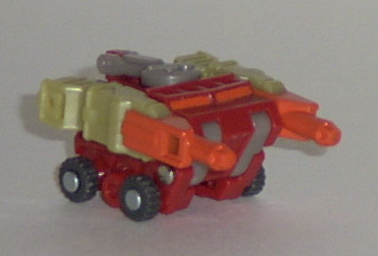
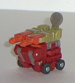
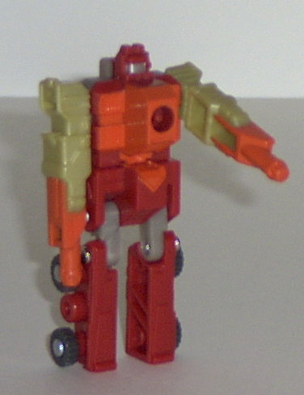
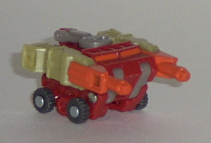
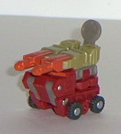
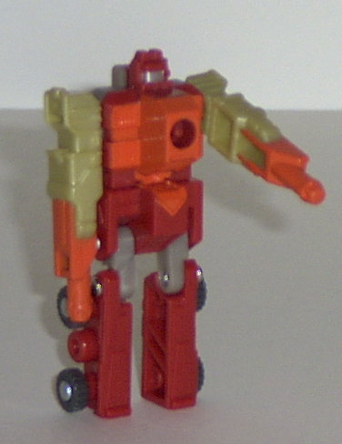
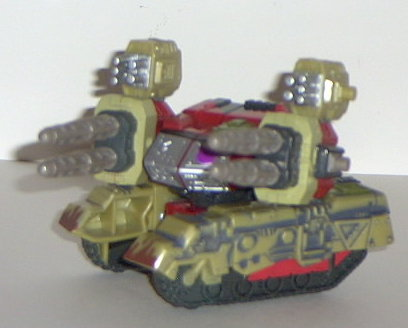
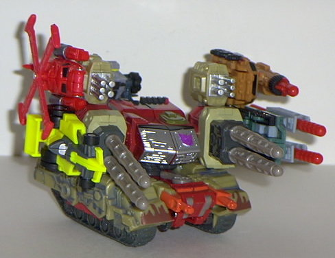
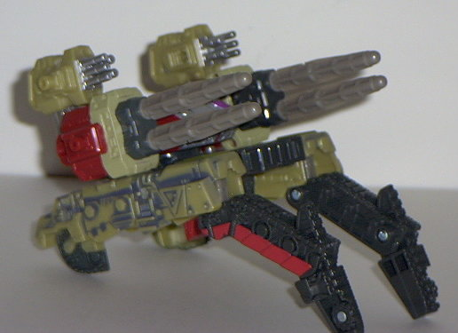
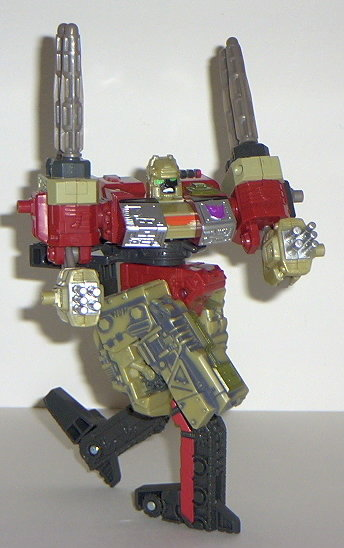

Blackout
Blackout
  
Allegiance : Minicon
Size : Mini-Con
Difficulty of Transformation : Very Easy
Color Scheme : Dark red, orange, muddy light greenish tan, sparkly gray, and some dark gray and silver
Rating : 5.8
Blackout



Allegiance
: Minicon
Size
: Mini-Con
Difficulty of Transformation
: Very
Easy
Color Scheme
: Dark red, orange,
muddy light greenish tan, sparkly gray, and some dark gray and silver
Rating
: 5.8
Blackout's vehicle mode
is some kind of futuristic wheeled vehicle thingy with blasters. Er, yeah.
Looks rather neat, though. The orange windows are a nice touch. Nice, if
not extraordinary, detailing. Blackout can hook up with Demolishor in vehicle
mode for a "launching" gimmick- more on this later. You can make an "attack
mode" with this thing by flipping the guns up and the radar dish out. Whee.
Not really much of a "mode" so much as a variation of the vehicular mode.
Blackout's transformation is ludicrously
simple. Simply unfold his legs, stand him up, and you're done. As for his
robot mode, it's fairly straightforward, but relatively unarticulated for
a Minicon. His arms can move forward and back at the shoulders and his
legs can move forward and back to a limited extend at the hips and ankles,
but that's it. Add Blackout's small feet, and it's hard to get many poses
out of him while still having him stand up on his own. His face looks pretty
interesting, though, definitely original- his silver visor has some kind
of dot in the corner, like a screw. Nifty. He's also pretty tall for a
Minicon, but this is probably due to the fact that he has no extra "armor"
or extras in this mode. Blackout's linkup point is in his chest.
Overall, Blackout's
far from the best of the Minicons, what with his limited articulation,
but his vehicle mode's neat-looking. But you're not really buying this
package for the Minicon, now, are you?
 Demolishor
Demolishor


Allegiance
: Decepticon
Size
: Super-Con
Difficulty of Transformation
: Medium
Color Scheme
: Dark red, muddy light
greenish tan, sparkly gray, dark gray, chalky greenish gray, red, and some
black, muddy brown, silver, dark military green, bright orange, white,
and bright green
Powerlinx ports
: 4 (1 gimmicked)
Rating
: 9.1
Vehicle mode is some sort of futuristic mobile missile launcher. Like Blackout, Demolishor is one of the few Armada toys that has a vehicle mode with nothing close to a real-life equivalent. But, hey, it looks cool! Isn't that all that matters? Demolishor has awesome detailing all over the place, and it's brought out especially nice on the bottom half, where the chalky greenish gray "dusting" is applied. Bolts, armor, and signs of wear and tear make Demolishor look like one 'bot who can take quite a beating. His detailing is also a little asymmetrical, as is typical of the Armada Decepticons. The Decepticon symbol is a little off-center, though, something I thought doesn't fit right. Also worthy of note is the molded-in "tank hatch" on the top of the main body of the vehicle, the mud splatters on the front, the molded-in "handles" on the back of the missile launchers for Minicons to "hold on to", and the fold-out seat on the back (made for holding Minicons). Demolishor has no "real" tank treads- just little wheels on the bottom- but due to his transformation, this is impossible. Another small complaint I have about this mode is that there isn't as much clearance between the bottom of the missile launchers and the top of the tread housing as I'd like. So, when you're swiveling Demolishor's top half around on its turret, it may scrape a bit. And you can't move the missile launchers up TOO much or they'll push against the bottom half and dislodge it out of place. Demolishor can have Blackout (in vehicle mode) pushed into a slot-buttom in between his tread halves. Then, when you press a small gray button on the back, ZOOM! goes Blackout! Well, that's what it's supposed to do. Half of the time, Blackout's guns get in the way, and he launches, like, 3 millimeters. Meh. As for Demolishor's Minicon-based gimmick, slap a Minicon on his lower left missile launcher. The two big missiles will push out slightly, indicated it's "battle-ready". Push the powerlinked Minicon forward, and awaaay the missiles go! I like this type of missile-firing gimmick better than the auto-firing gimmick possessed by some other 'bots such as Cyclonus . This way, you can have a Minicon attached to Demolsihor on his lower left side without having him accidentally firing the thing. However, what's odd about this is that it only works on one of the main missile launchers, not both. The other missile launcher is just to hold the extra missiles. Cost cuts, I suppose. Still woulda been nice, though.


Demolishor has a lame
"base mode" which is basically his vehicle mode with the top half turned
around and the treads partially folded out into the legs. Poo you, Hasbro,
this ain't a base mode! It's a... thingie... tread... mode... thing.
As for Demolishor's
robot mode, it rocks. Plain and simple. One of the best robot modes of
Armada, hands down. His face is kickin' with a nice targeting reticule
that looks like an eye patch. And with his guns for fingers (GUNS FOR FINGERS,
man!), he's ready to do some damage. The large missiles on the shoulders
complement the mode, as well. His tread-peg-leg-feet look a LITTLE odd,
but it's no big deal. His chair assembly from vehicle mode also sticks
out of the back a bit, but again, it's not that big of a deal. His legs
also look a little odd from a front-on view. Demolishor has quite good
articulation for a non-Minicon Armada toy, with shoulder, elbow, hip, knee,
waist (at TWO points), and slight feet articulation. This allows for some
great poses! You go, Demolishor!
Demolishor's vehicle
mode is great, and his robot mode is one of the best and most articulated.
Gimmick-wise, he ain't nothing special (although at least it's not annoying),
but he more than makes up for it with his looks. Definitely worth your
purchase!
Review by Beastbot